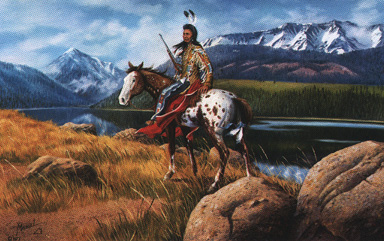
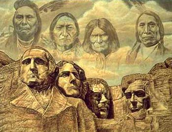
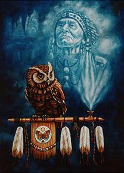
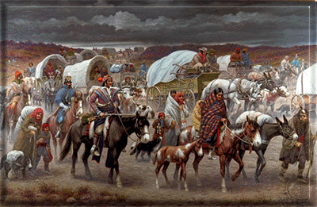

|
 A Cherokee Chief with a strong rebellion against the Removal |
| 
 Painting that is the imageof great Indians and great White People. Painting of a Cherokee Chief |
|
 A painting of the long journey of The Trail of Tears. |
| Back To Home Page |